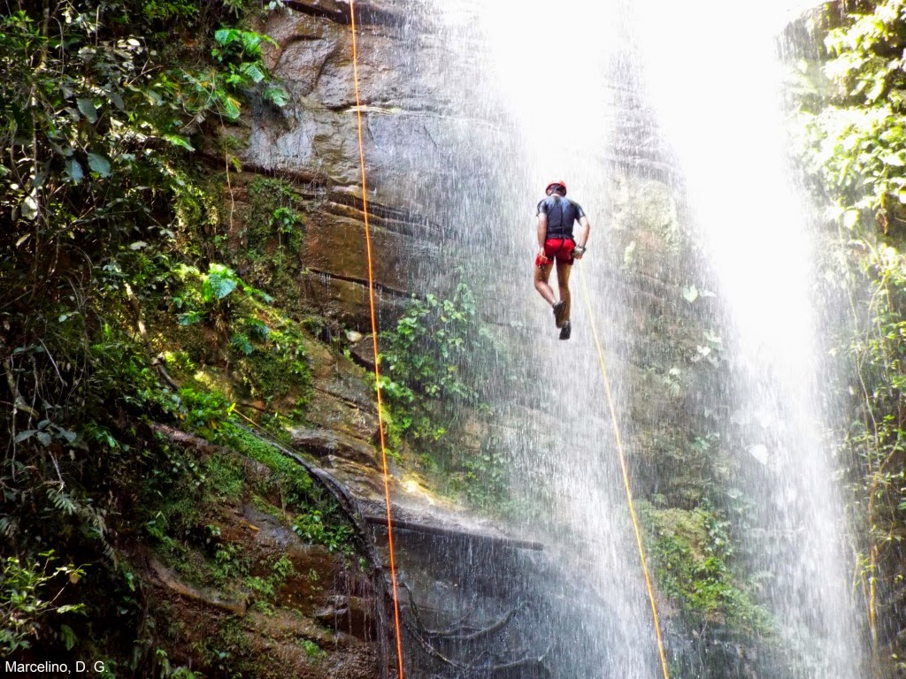
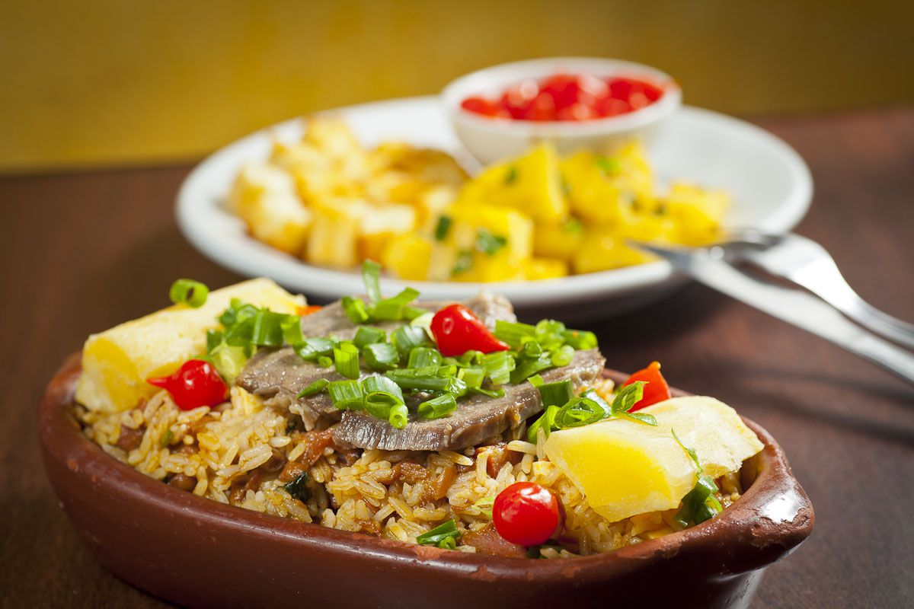

Destinos e Experiências
Mais do que um passeio, queremos proporcionar uma experiência única

Para os amantes de adrenalina
O Rapel na Cachoeira da Roncadeira oferece um dos visuais mais bonitos da região. Une esporte, saúde, meio ambiente, belezas naturais e meditação
Taquaruçu

Para quem gosta de comida típica
Na Vila dos Sabores você vai experimentar pratos e sobremesas típicas, elaborados com um toque exclusivo
Taquaruçu

Para admirar uma cultura rica
Artesanal regional variado e uma linha de souvenirs que inclui réplicas de prédios históricos e pontos turísticos
Palmas e Taquaruçu